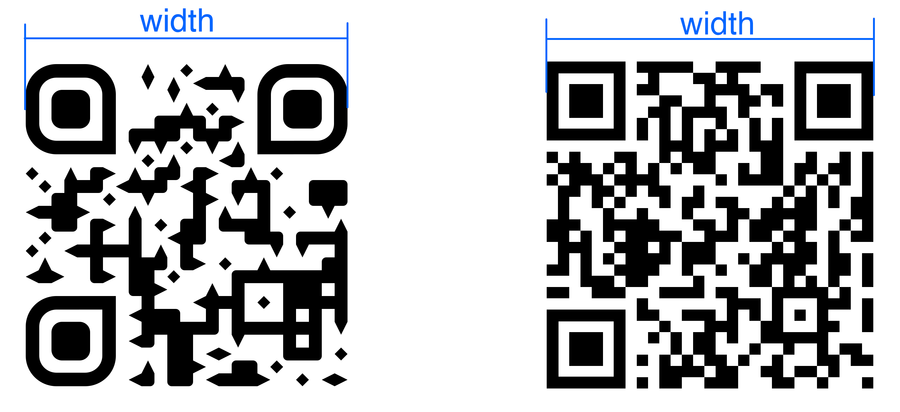
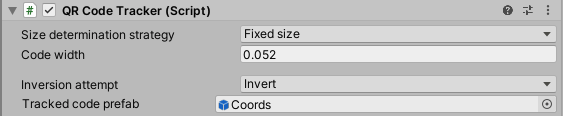
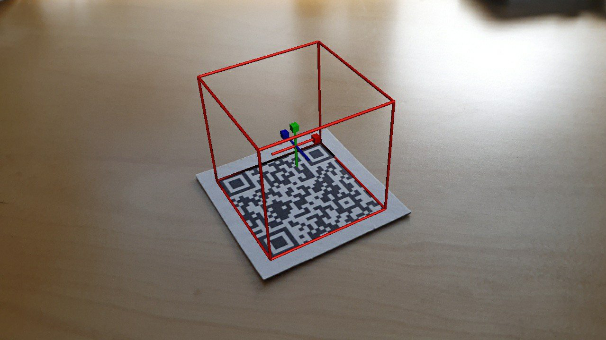
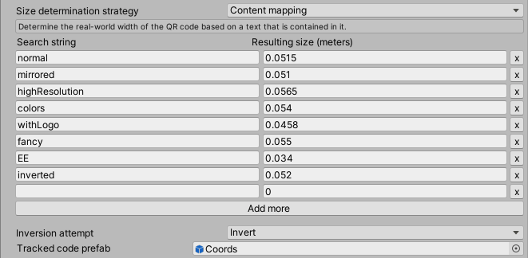
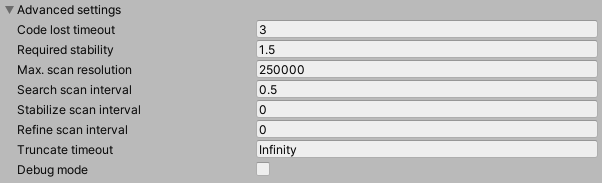
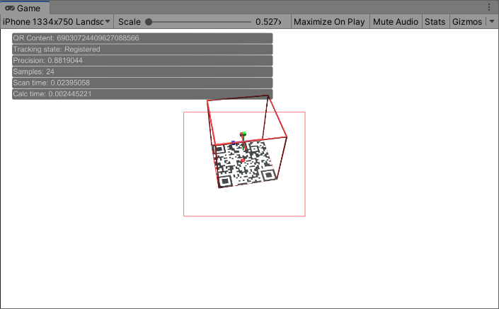

Example Setup
Preliminaries
QR Foundation is built to work together with AR Foundation. Therefore, before you can get started, you will need to integrate AR Foundation into your project. As AR Foundation is a new and constantly evolving technology, this process will vary based on the version you are using. Try to follow the official guide.
When you're done, you should end up with a scene like this:

The AR Session and AR Session Origin can be created pre-configured from the GameObject > XR menu. Make sure this basic setup works before you proceed. To confirm, you can place objects in the scene and look around with your phone to see if they stay at fixed locations in the physical world.
Basic usage
When your basic AR setup is running, attach the QR Code Tracker script to your AR Camera.
Now measure the width of your physical QR code in meters and enter it as the Code width parameter in the inspector. The width is the distance between the outer borders of the alignment patters, as you can see below. Do this as precisely as possible, as small errors in the measurement may result in large errors in the tracking.
Lastly, assign a prefab to the Tracked code prefab property in order to see an effect. You can use the Coords prefab from the /Prefabs/Debug folder.
That's it. You're ready to try it out.
How to proceed
Sooner or later you'll likely want to be able to track QR codes of different sizes. Check out the section on size determination strategies for this. If you're interested in triggering custom actions on code detection, refer to the lifecycle events. You can also see some of the topics discussed there in action in the sample scene located under /Samples/SampleScanner.
Finally, if you want more control over the tracking or need to troubleshoot issues , have a look at the advanced options.
API
Tracking configuration
Size determination strategy
For locating the QR code in space, it is under the current state of AR technology on most consumer hardware still necessary to know the pysical size of the tracking target in advance. This asset offers three ways to specify the size, which will be explained in the following.
Fixed size
In the most simple case, all codes have the same phyical size. In this case, this strategy can be used.
Content mapping
A size is assigned to the code by matching its content against a search string. An arbitrary number of search strings can be mapped to a size each.
The algorithm looks tests the strings in the specified order to see if one is contained within the QR code's content. If so, it stops. You can add an entry with an empty search string at the last position as a fallback that will always match.
Custom function
This mode enables you to write custom logic for determining the code width. Simply assign your own function to the public \"getWidthDelegate\" property of this component. It will receive the QR code's content as a string and has to return the width in meters.
GetComponent<QRCodeTracker>().getWidthDelegate =
(content) =>
{
if (content.Length < 20)
return 0.05f;
return 0.2f;
};
Inversion attempt
Specifies whether the system should look for light-on-dark QR codes. Disable it if you are not planning to support light-on-dark codes, at is has a negative performance impact.
Tracked code prefab
A prefab which will be spawned where the QR code is detected and kept synchronized over time. Defaults to an empty GameObject. The spawned GameObject will also share the rotation and scale of the code, in the sense that a rectangle with an edge length of 1 meter with its origin at the center will overlay the code perfectly.
Lifecycle events
The tracking has three states. In SEARCHING state no QR code is detected and scanning is done in larger intervals. When a code is detected, the system switches to STABILIZING state where scanning is done as often as possbile to quickly fixate the code in space. As soon as the desired precision is reached, the system switches to REGISTERED state, which is when the GameObject is spawned. The other possible transitions can be seen below.
Within this state machine, you can specify the following lifecycle hooks:
On Code Detected
This event fires right after a (new) code as first been recognized. It emits the string content of the QR code. As a little time may pass between the initial recognition and the tracking being stable, this event can be used to preload data or already give a first success indication in the UI.
On Code Registered
This event fires when the code is stabilized for tracking. It emits the string content of the QR code and the GameObject (see Tracked code prefab) which is spawned in its place. Based on the string content, you can for example attach different prefabs to the spawned GameObject.
On Code Lost
Called when the previously registered code has not been successfully scanned for a certain amount of time
Advanced settings
Code lost timeout
The amount of seconds that need to pass without a successful recognition of the code before treating it as lost and switching back to SEARCHING mode.
In some scenarios it may be useful to just set this to a very high number in order to practically never lose the code.
Required stability
This can be interpreted as the maximum allowed degree of fluctuation in the tracking before the system switches to the REGISTERED state (lower value = less fluctuation = more stable).
Higher values result in earlier, but initially less stable alignment. Values between 1 and 2 have proven to be reasonably choices here.
Max. scan resolution
For performance reasons, the camera image is downscaled before analyzing it. This value determines the maximum amount of pixels (width x height) that should be targeted for this.
Higher values result in more accurate tracking at the cost of higher CPU usage/fewer scans per seconds. However, the benefit of increasing this value is neglectable. Decrease it if you need better performance.
Search scan interval
The number of seconds (with fractional part) that have to pass at least between two consecutive scans in SEARCHING mode, i.e. when no code has been recognized so far.
You can keep this value rather high (≥0.5) in order to save CPU time.
Stabilize scan inverval
The number of seconds (with fractional part) that have to pass at least between two consecutive scans in STABILIZING mode, i.e. when a (new) code has been found, but the AR alignment is not yet stable enough to count it as registered.
It is recommended to keep this value at 0 for the fastest registration possible.
Refine scan interval
The number of seconds (with fractional part) that have to pass at least between two consecutive scans in REGISTERED mode, i.e. after the prefab is spawned.
How you set this value depends on your use case. For the most accurate tracking over time, you may set it to 0. If accuracy is not too important in your scenario, you can choose high values and rely on AR Foundation to preserve the alignment.
Stabilize timeout
When this amount of seconds has passed in STABILIZING mode, the code is registered based on the current samples regardless of the precision.
Debug mode
Activating the debug mode will have the following effects:
Debug outputs
In the top left corner of the sceen, you will see the following debug outputs:
- QR content: String content of the last detected QR code
- Tracking state: The current state in the lifecycle.
- Precision: The current tracking precision as it is used for configuration here. Lower is better.
- Samples: The current number of registered samples from which the alignment is averaged.
- Scan time: The number of seconds the last scan took.
- Calc time: The number of seconds the last processing of the scanned data took.
Simulated QR codes
It is possible to track virtual QR codes in debug mode. If you create an object (e.g. a plane) with a QR code as the texture and place it on Layer 8, it will be treated as if it were part of the real world.
Center markers
Red spheres will spawn at the estimated center of the QR code. Use can use them to diagnose your device's world tracking stability if you experience bad performance of QR Foundation. If the spheres are very scattered but remain stationary, the error probably lies within QR Foundation. If the spheres are moving around relative to the real world, your device's world tracking is unstable and thus QR Foundation's performance will suffer as well.